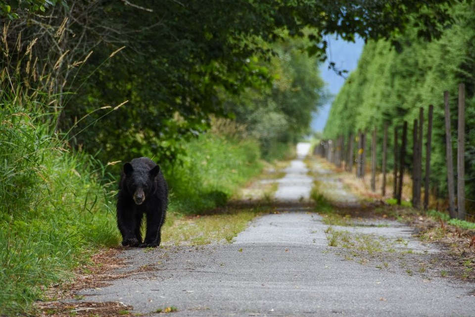

National Wildlife Areas

There are currently 57 National Wildlife Areas across Canada (some located in regions that include relatively undisturbed ecosystems) containing nationally significant habitats for animals or plants. Environment and Climate Change Canada's National Wildlife Areas protect over 2.1 million hectares of habitat with over three-quarters of that area protecting marine habitat.
-
According to the Canada Wildlife Act, National Wildlife Areas are created and managed for the purposes of wildlife conservation, research, and interpretation. Environment and Climate Change Canada uses an ecosystem approach to manage and plan for National Wildlife Areas.
-
Established through the Wildlife Area Regulations, National Wildlife Areas can only be designated on lands owned by the federal government. Where lands are not federally owned, Environment and Climate Change Canada may enter into an agreement with the landowner to establish and cooperatively manage a wildlife area, which would not be designated under the Regulations. Partnerships can be created with the provinces, Aboriginal groups and private land owners through programs such as the Habitat Stewardship Program for Species at Risk and the Habitat Joint Ventures.The Wildlife Area Regulations identify prohibited and permitted activities in National Wildlife Areas. All National Wildlife Areas are listed under Schedule 1 of the Regulations